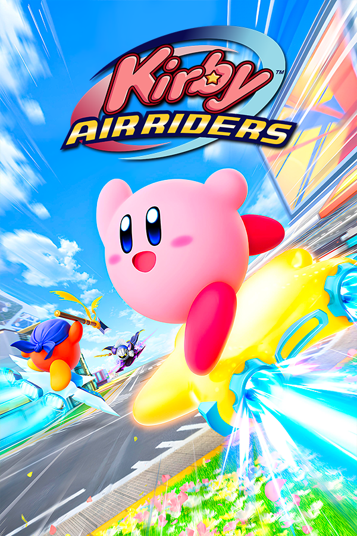

Game profile

Kirby Air Riders
Every archived year-end list appearance, including placement and points earned.
About the Game
Kirby Air Riders is an action-adventure game. It was originally released in 2025. It was published by Nintendo. The game is rated as "Meh" on RAWG. Kirby Air Riders is available on Nintendo Switch. You can purchase the game on Nintendo eShop. Masahiro Sakurai directed the game.
| Released | 2025-11-20 |
|---|---|
| Publisher | Nintendo |
| Genres | Action, Adventure |
| Platforms | Nintendo Switch |
Where to Buy
Game information provided by RAWG.
6List appearances
1Years represented
Points by Year
122025 points
List History
| Year | Source | List | Placement | Points |
|---|---|---|---|---|
| 2025 | Empire | The Best Games Of 2025 As Ranked By Empire Magazine | 18 | 3 |
| 2025 | Eurogamer | The 50 best games of 2025, ranked | 40 | 1 |
| 2025 | GameSpot | The Best Games Of 2025 | Unranked | 1 |
| 2025 | Geeky Brummie | Top 50 Most Notable Games of 2025 | 30 | 1 |
| 2025 | NPR | The best games of 2025, picked by NPR's staff | Unranked | 1 |
| 2025 | Polygon | The 50 best games of 2025, as chosen by Polygon | 7 | 5 |